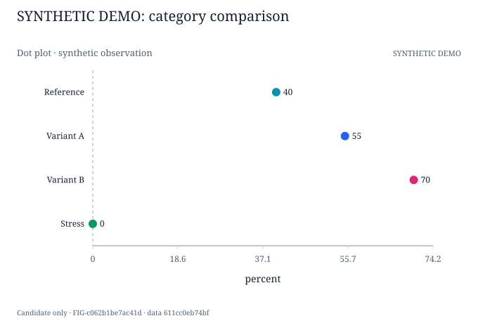
G01-F01 · 点图 / Dot plot
SYNTHETIC_DEMO · Synthetic workflow demonstration only
FIG-c062b1be7ac41dPaper: SYNTHETIC-DEMO-NOT-HEIRS · snapshot 69501a0c745281a9
候选预览，不是论文定稿。浏览器选择仅保存在本机；请导出反馈并通过后端核对版本后持久化。Synthetic demo 不是研究结果。
| Method | Within group | Cross group | |||
|---|---|---|---|---|---|
| within-a | within-b | Within Avg | cross-a | Cross Avg | |
| Reference | 40.0 | 35.0 | 37.5 | 30.0 | 30.0 |
| Variant A | 55.0 (+15.0) | 50.0 (+15.0) | 52.5 (+15.0) | 45.0 (+15.0) | 45.0 (+15.0) |
| Variant B | 70.0 (+30.0) | 65.0 (+30.0) | 67.5 (+30.0) | 60.0 (+30.0) | 60.0 (+30.0) |
Missing/invalid cells: 0 · 平均只在预定成员齐全后计算。
同一数据、不同表达 / Same data, different encodings

SYNTHETIC_DEMO · Synthetic workflow demonstration only
FIG-c062b1be7ac41d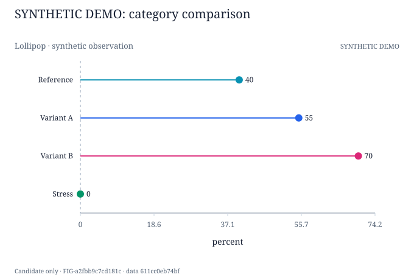
SYNTHETIC_DEMO · Synthetic workflow demonstration only
FIG-a2fbb9c7cd181c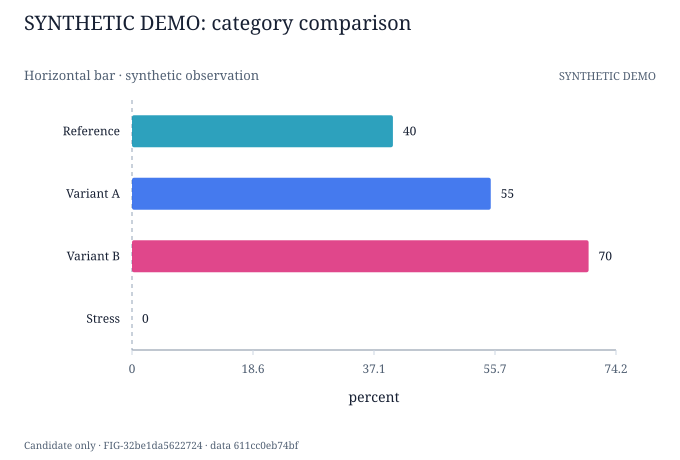
SYNTHETIC_DEMO · Synthetic workflow demonstration only
FIG-32be1da5622724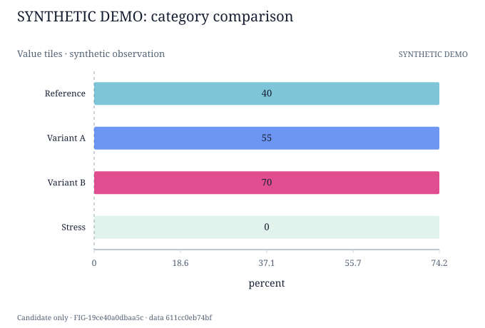
SYNTHETIC_DEMO · Synthetic workflow demonstration only
FIG-19ce40a0dbaa5c同一数据、不同表达 / Same data, different encodings
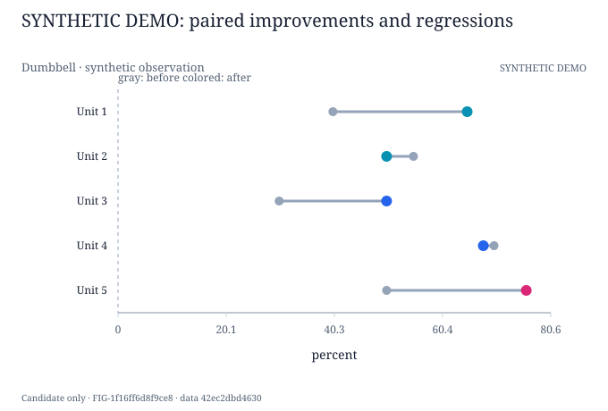
SYNTHETIC_DEMO · Synthetic workflow demonstration only
FIG-1f16ff6d8f9ce8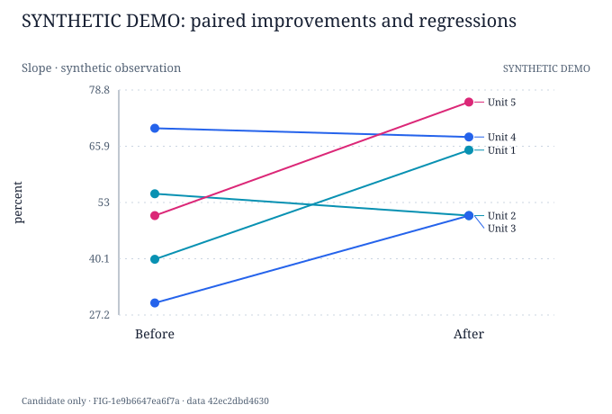
SYNTHETIC_DEMO · Synthetic workflow demonstration only
FIG-1e9b6647ea6f7a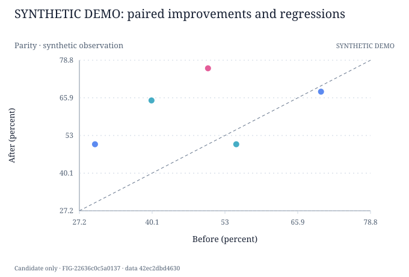
SYNTHETIC_DEMO · Synthetic workflow demonstration only
FIG-22636c0c5a0137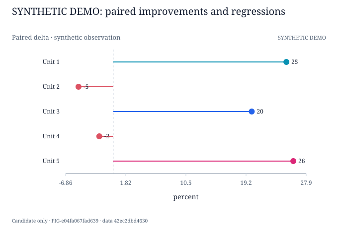
SYNTHETIC_DEMO · Synthetic workflow demonstration only
FIG-e04fa067fad639同一数据、不同表达 / Same data, different encodings
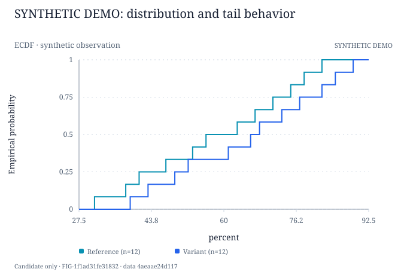
SYNTHETIC_DEMO · Synthetic workflow demonstration only
FIG-1f1ad31fe31832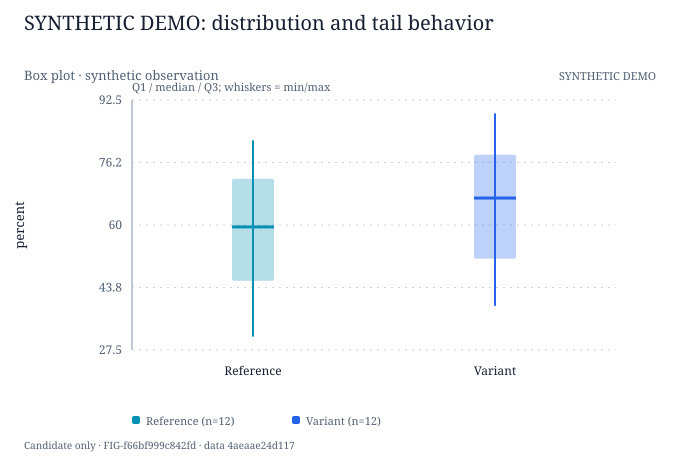
SYNTHETIC_DEMO · Synthetic workflow demonstration only
FIG-f66bf999c842fd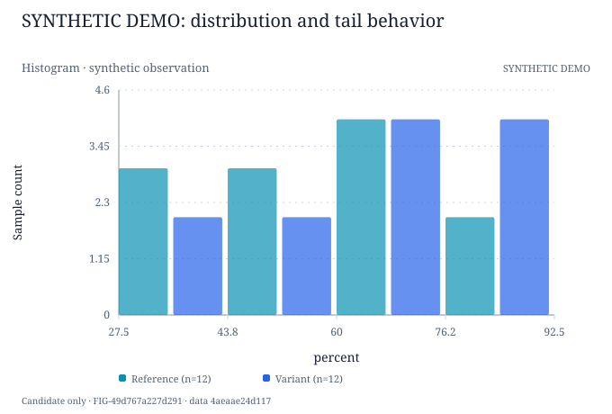
SYNTHETIC_DEMO · Synthetic workflow demonstration only
FIG-49d767a227d291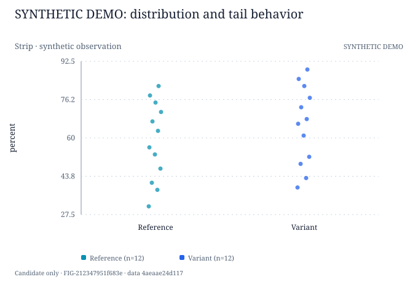
SYNTHETIC_DEMO · Synthetic workflow demonstration only
FIG-212347951f683e未写入服务器。
{
"source_errors": [],
"blocked_assets": [],
"snapshot": "69501a0c745281a9e317e08bcd849db902744131d233951dd48818c36101ed1e"
}